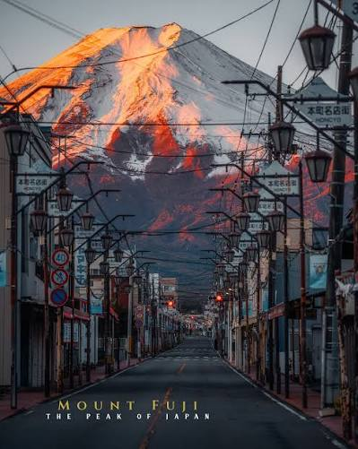

Tokyo
Tokyo is famous for its ultra-modern technology and futuristic neon skylines with ancient temples
and deep traditions. Challenge
Mount Fuji

Mount Fuji is the highest mountain in Japan, standing at 3776 meters tall. It is an
active stratovolcano with a symmetrical conical shape. It sits on the border of
the Yamanashi and Shizuka on Honhu Island.
Skyliens

They have ultra-modern, neo-futuristic architecture with dense urban sprawl and historic and natural landmarks.
Some iconic towers are Tokyo Skytree, Tokyo Tower, and Abeno Harukas.
Osaka

Osaka is Japan's third largest city, known as the Nation's kitchen for its street food, nightlife, and friendly locals